Niico4
Nicolas
Soy Nicolas, tengo 17 años, pero empecé a adentrarme al mundo de los videojuegos a mis 6 años, empecé jugando Operation7, lo solía jugar en unas cabinas (ciber) que quedaba a pocas cuadras de mi casa, invertía una gran cantidad de tiempo en ello. A los 7 años para cumpleaños, mi Madre me regalaría mi primera consola, una PlayStation2, deje de lado Operation7 y me metí al mundo de Def Jam: Fight for NY.
Nicolas
A los 8 años, para navidad mi Madre me regalo mi segunda consola la cual sería una Xbox360, el primer juego que probe fue el Grand Theft Auto V, era uno de mis juegos favoritos junto al Black Ops III - Call of Duty, disfrutaba pasar mi tiempo jugando con mis amigos y con mi hermano. Solía jugar también algunos juegos como Red Dead Redeption, algunos Halo y otros juegos más. La Xbox360 me acompaño durante una gran parte de mi vida.
Nicolas
A mis 13 años, mi Madre me regalaría una PlayStation4, ahí conocería el juego llamado Fortnite, un juego el cual se llevaría mucho tiempo de mi vida, conocí muchas personas en el juego, las cuales poco a poco se convertirían en personas importantes, A los 15 años, llegaría mi Primera Pc Gamer como regalo de cumpleaños nuevamente por parte de mi Madre, esa Pc marcaria mucho, gracias a esa Pc, lograría todo, me serviría como motivación.
¿Qué me enseñaron?
Los videojuegos y el fútbol, marcaron mucho en mi infancia. Me enseñaron a nunca rendirme, que, si 10 veces me caigo, 10 veces me tengo que levantar y seguir con todo. Los Videojuegos me unieron con personas, poco a poco esas personas se iban volviendo mas importantes, personas que a través de un juego se iban ganando mi confianza y mi cariño.
 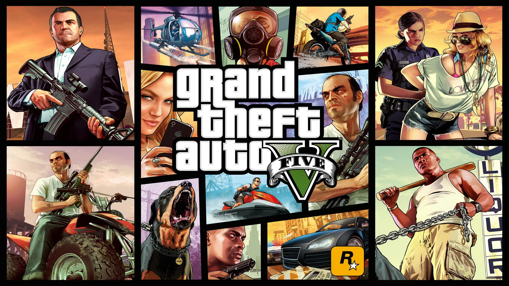
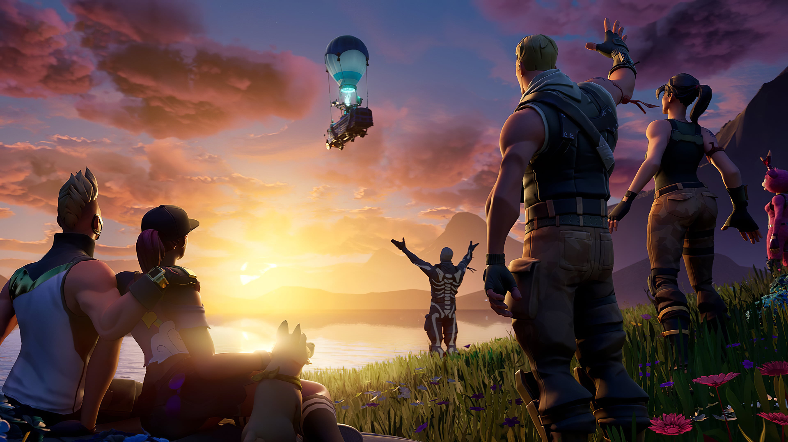
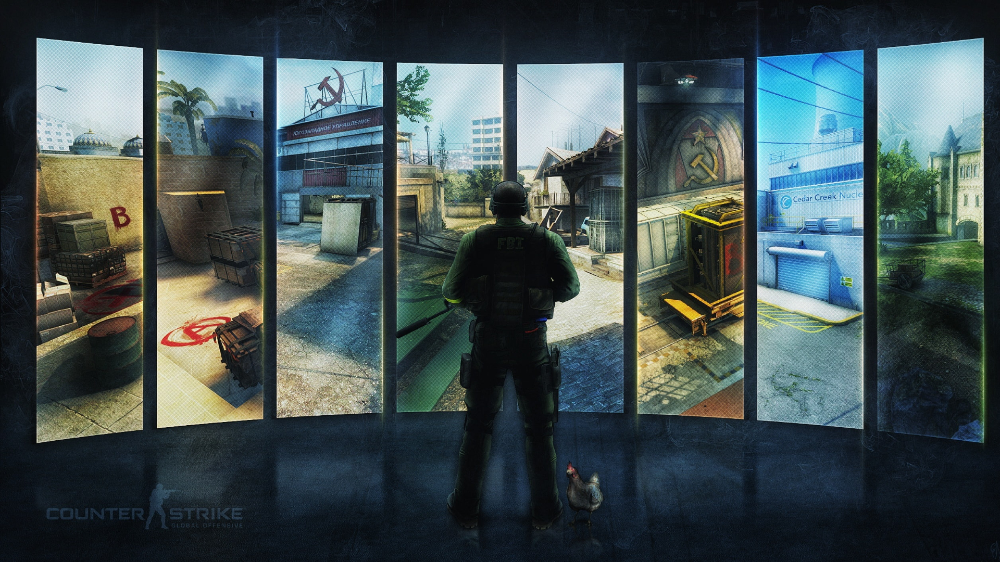
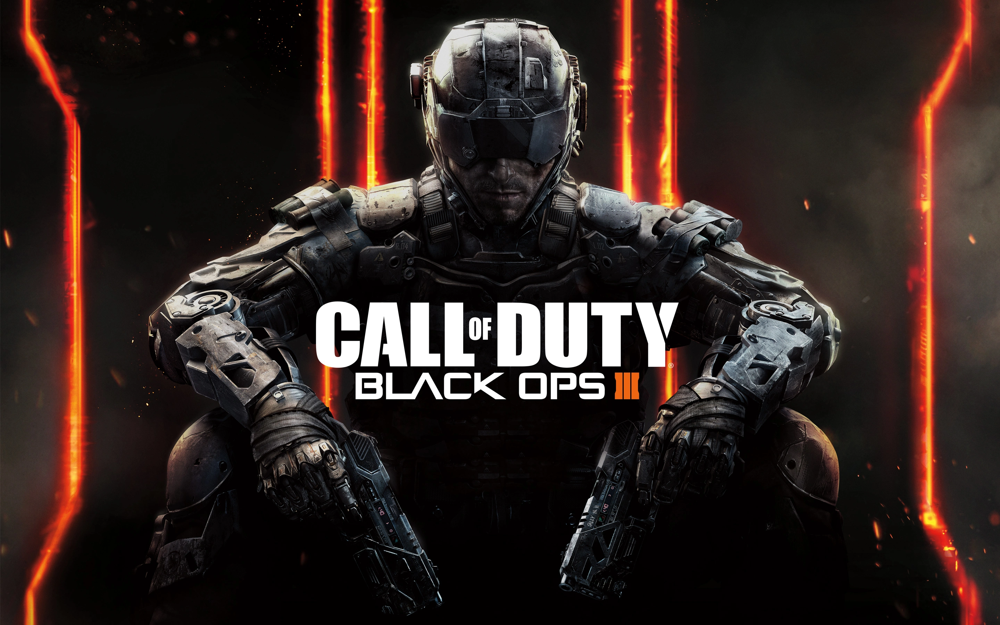
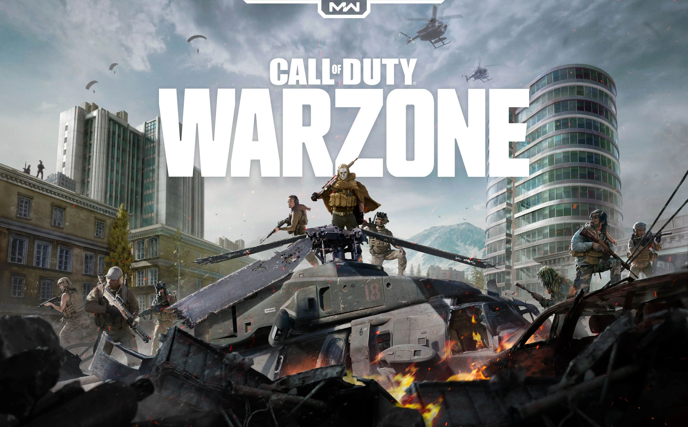
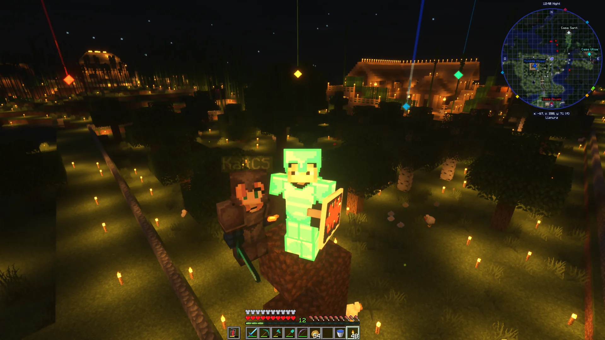
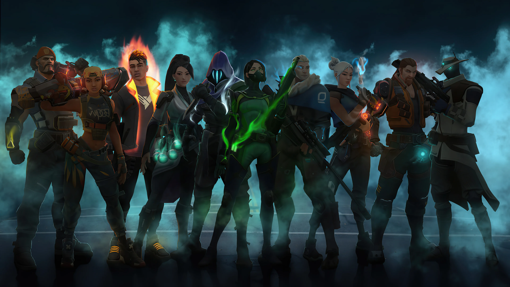
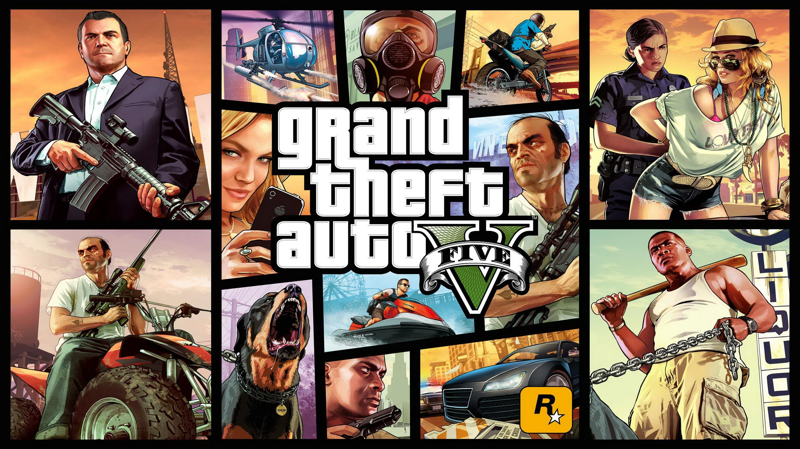
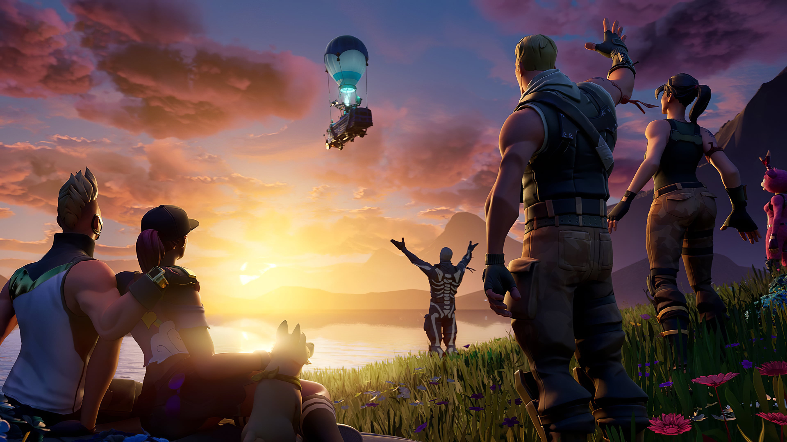
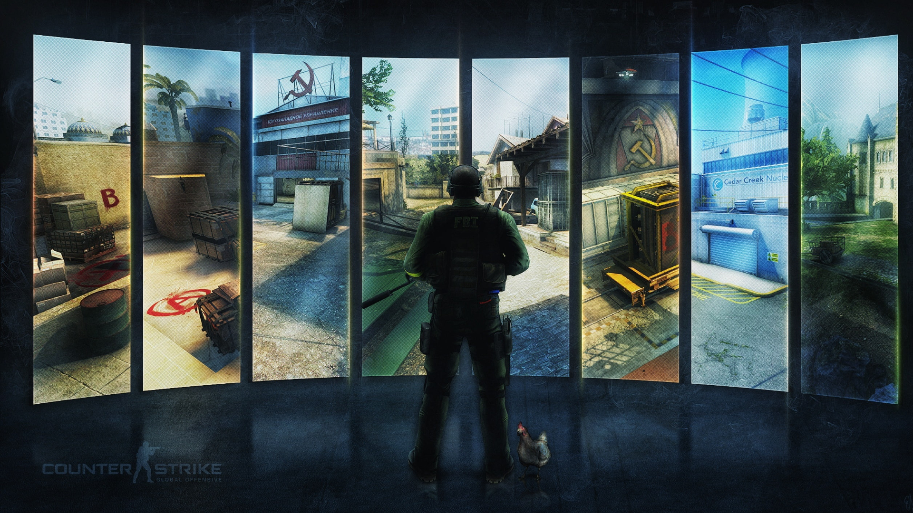
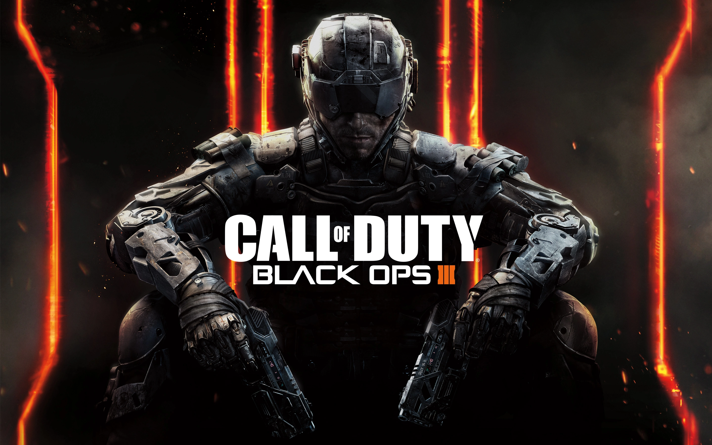
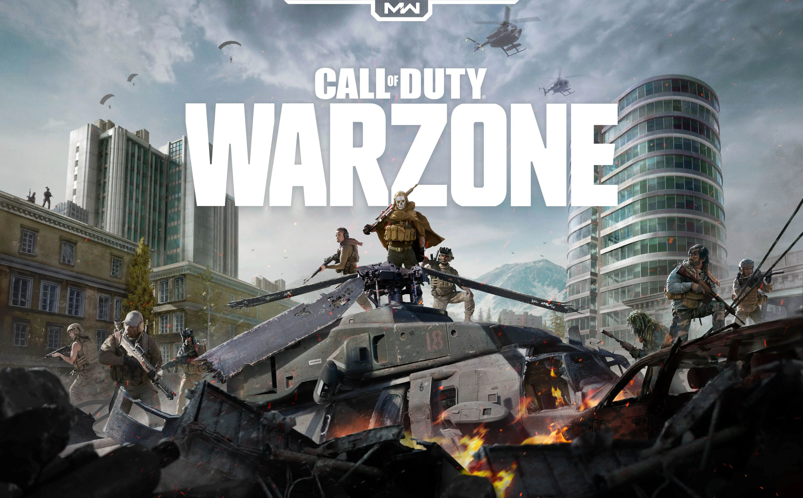
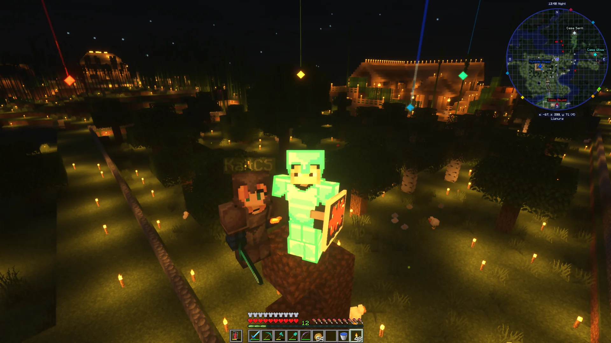
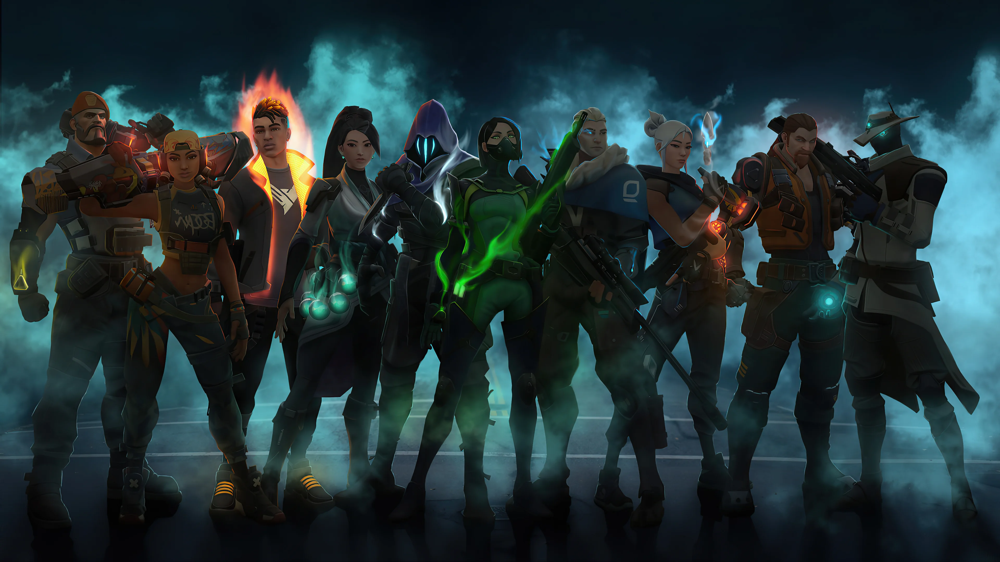